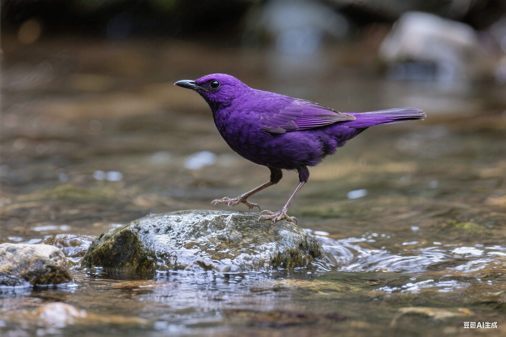

"耐心和一致性是成功训练宠物鸟的关键。每只鸟都有自己的个性和学习节奏。"
— 动物行为学专家🎯 训练基础原则
成功的鸟类训练建立在信任和正向强化的基础上。了解鸟类的自然行为模式，采用科学的训练方法，可以帮助您的宠物鸟发展良好的行为习惯。
训练黄金法则
- 保持耐心和一致性
- 使用正向强化方法
- 短时间高频率训练
- 尊重鸟类的自然行为
🏠 基础行为训练
从简单的基础行为开始训练，逐步建立人鸟之间的信任关系：
1
建立信任
每天在笼子旁安静地坐一段时间，让鸟儿习惯您的存在。说话时保持温和的语调。
2
手部训练
先让鸟儿习惯您的手在笼子附近，然后逐渐将手伸入笼内，最终训练上手。
3
出笼训练
在安全的环境中让鸟儿出笼活动，训练回笼和基本指令。
🗣️ 语言训练技巧
许多鸟类具有学习人类语言的能力，通过正确的方法可以教会它们说话：
🎵 重复练习
每天在固定时间重复简单的词汇，如"你好"、鸟儿的名字等。
🎭 情境教学
在特定情境下教授相关词汇，如喂食时说"吃饭"，增强记忆效果。
🎁 奖励机制
当鸟儿尝试发声或成功模仿时，立即给予食物奖励或赞美。
⚠️ 问题行为纠正
及时识别和纠正问题行为，防止其成为习惯：
🔊 过度鸣叫
原因：寻求注意、无聊、恐惧或兴奋
解决：忽略不当鸣叫，奖励安静行为，提供足够的刺激和互动
🦷 咬人行为
原因：恐惧、保护领域、荷尔蒙变化
解决：避免惩罚，识别咬人前的身体语言，重新建立信任
🪶 拔毛行为
原因：压力、无聊、健康问题、环境因素
解决：首先排除健康问题，改善环境，增加互动和刺激
🎪 进阶训练项目
在掌握基础训练后，可以尝试更有趣的进阶项目：
🎯 技能训练
- 转圈、点头等简单动作
- 拾取和放置物品
- 按铃、推球等互动游戏
- 飞行召回训练
🧠 智力游戏
- 拼图和解谜玩具
- 颜色和形状识别
- 数字概念学习
- 记忆力训练游戏
⚠️ 训练注意事项
- 绝不使用体罚或恐吓方式
- 训练时间不宜过长，每次5-15分钟
- 观察鸟儿的情绪状态，避免强迫训练
- 保持训练环境的安全和舒适
- 如遇严重行为问题，及时咨询专业人士
📈 训练进度记录
建立训练日志，记录进步和挑战，有助于调整训练策略：
📝 每日记录
记录训练内容、鸟儿反应、进步情况和遇到的问题
📊 定期评估
每周评估训练效果，调整方法和目标
🎯 设定目标
制定短期和长期训练目标，循序渐进